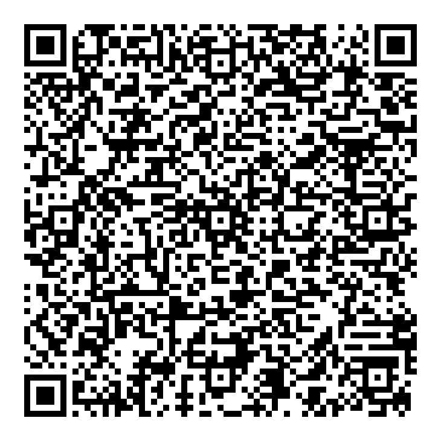

On your Android wallet: Home → + → Scan & Download Card. Scan this QR from your Mac screen.
Target: https://injicertify-mock.collab.mosip.net
Configuration: MockVerifiableCredential_SD_JWT

This is an exploratory authorization-code offer. It contains no pre-authorized code, access token, identity or credential. Wallet/client registration and issuer compatibility remain to be observed. It does not change registry settings.